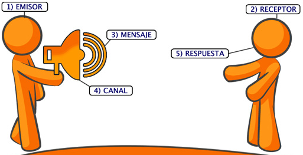
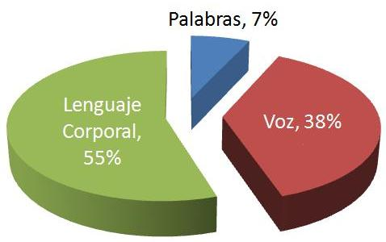

Consejos para disfrutar el curso
Favor de poner atencion
Favor de poner atencion
Planificacion del Curso
- Presentacion
- Entendamos la comunicación
- Principios de la comunicación
- Elementos de la Comunicación
- Comunicación No Verbal
- Componentes de la Comunicación
- Lenguaje de las Manos
Tec. Antonio Xoyoc Becerra Farias
FrontEnd y Encargado de IT en AAALAC
Curso de Comunicación
Entendamos la comunicación
Acción de poner en común (pensamientos, deseos, emociones) y la creación de significado a las señales enviadas/recibidas
Entendamos la comunicación
La comunicación es dinamica, no estatica
Principios de la comunicación
- Personal
- Omnipresente
- Inevitable
- Irreversible
Manejo de la información
"Todas las personas manejamos información, le damos un sentido diferente, la insinuamos para que nos haga sentir mejor, la ocultamos, inclisive de nosotros mismos"
Manejo de la información
"Todas las personas toman una decisión por una razón"
Una buena razón, o por la verdadera razónTe da temor hablar en público? Probablemente padezcas una fobia que se llama...
GlosofobiaHipopotomonstrosesquipedaliofobia
La primera impresión
- Siempre es del 100%
- Punto de Partida
- Sirve para leer el cuerpo, gestos (detectar amenazas)
- Es Bidireccional
- Modificarla, requiere trabajo
- ¿Que impresión quieres dar?
Conceptos claves en comunicación
Percepcion
Contexto
Percepcion
Forma en que las personas conciben la realidad dentro y fuera de nuestro organismo
Contexto
Conjunto de circustancias en que se situa un hecho
Proceso de la comunicación
El estrés
- Casi 50% lo sufre
- México, el país con mayor estrés laboral, según la OMS
- El 75% de los trabajadores en México padece estrés
- Entre el 75% y 90% de las visitas del medico
Una persona estresada
- Percibe la información selectiva y ve solo aquello que confirma sus desviaciones previas
- Se vuelve intolerante y exige respuestas correctas
- Tiene fijacion por un solo metodo para atender un problema
- Sobrestima que tan rapido pasa el tiempo y siempre se siente apresurado
- Adoptan una mentalidad de crisis a corto plazo
- Consulta y Escucha menos a su alrededor
- Confia en los viejos habitos para manejar situaciones actuales
- Reduce su capacidad para crear pensamientos creativos y soluciones unicas a problemas unicos
Problemas en la comunicación
- Falta de armonía visual con los oyentes
- Rigidez o falta de expresión en el uso del cuerpo
- La presentación del material esta intelectual orientada, olvidando involucrar emoción en la audiencia
- El orador parece incomodo (temor al fracaso, al entrenamiento a aburrir)
- Falta de humor en el envió de los mensajes
- Falta de claridad en la dirección y propósito del discurso por falta de preparación
- Poca habilidad en el uso del silencio
- Falta de energía en la transmisión del mensaje
- Uso de un tono, velocidad, volumen y dicción aburrido, inadecuadas
Movimientos
- Ilustrador
- Manipulador
Manipulador
Movimientos que no acompañan el mensaje
Gestión de la información
La información es el contenido; y por tanto el mensaje final depende del orador
"Ningún mensaje será entregado, si no es recibido"
Elementos de la comunicación
Zona Íntima
0 a 20cm
Zona Personal
20cm a 50cm
Zona Social
50cm a 2Mts
Zona Pública
2Mts a más
Estilos de comunicación
- Visual
- Auditivas
- Kinésicos
Visual
- Entiende el mundo tal como lo ve
- Tiene a hablar rapido
- Le gusta mirar y que le miren a los ojos al hablar
- Usa frases "visuales" al expresarse
- Transforma las palabras en imagenes
Auditivas
- Tiende a ser mas sedentarias que las visuales
- No necesitan estar observando para saber lo que pasa
- Es muy cerebral, tiene mucha vida interior
- Es muy conversadora
- Tiene gran capacidad para organizar ideas en medio de un caos auditivo.
Kinésicos
- Llevan el corazon a flor de piel ya que son muy sentimentales
- Demuestran sus emociones y expresan expontaneamente sus sentimientos
- Hablan despacio y con tono más grave que los visuales y auditivos
- Tiende a mirar hacia abajo, muestra que esta reconociendo sus sentimientos
- Se mueven mucho
Lenguaje de las Manos
Generar ambiente amigable

Se pierde el tema principal
Detener algo dicho
Detener una accion que se esta llevando acabo
Generar accion sin agresion